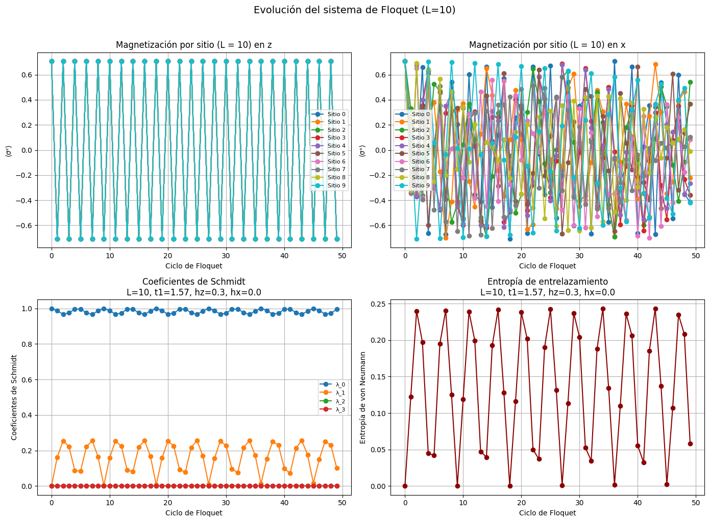
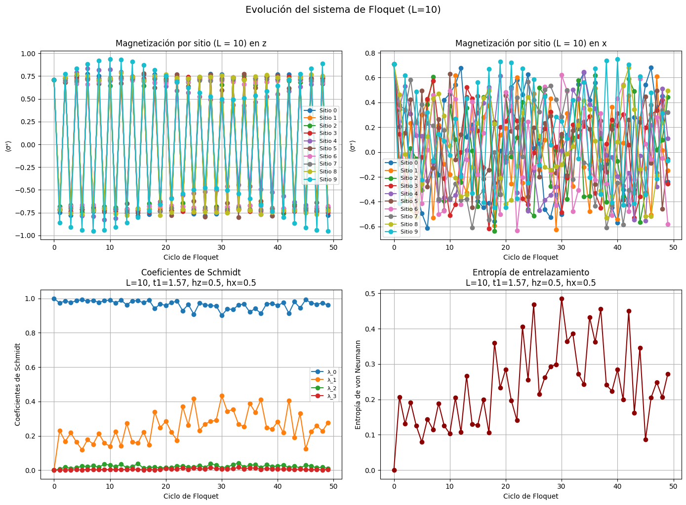
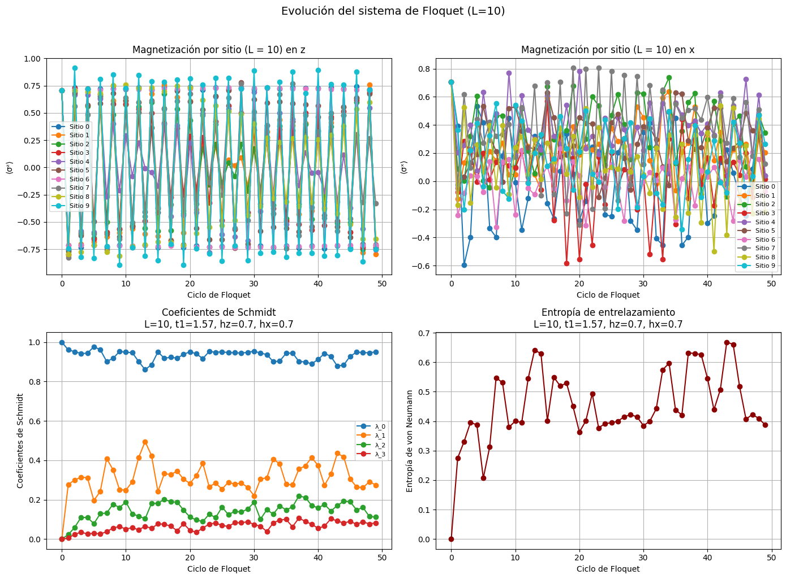

import numpy as npfrom scipy.sparse import kron, eye, csc_matrixfrom scipy.sparse.linalg import expmimport matplotlib.pyplot as plt#Vamos a utilizar matrices sparse para hacer más eficiente el programa# Definimos las matrices de Pauli y la identidad como matrices sparsesx = csc_matrix(np.array([[0, 1], [1, 0]], dtype=complex)) # Pauli_Xsz = csc_matrix(np.array([[1, 0], [0, -1]], dtype=complex)) # Pauli_Zid2 = csc_matrix(np.eye(2, dtype=complex))def prod_kron_n(ops): #Calcula el producto de una lista de operadores. result = ops[0] #ops: operadores (matrices) en cada sitiofor op in ops[1:]: result = kron(result, op)return resultdef op_local(op, sit, L): #Crea un operador local que actúa sólo en un sitio y como identidad en el resto.#op: operador (sx o sz)#sit: índice del sitio#L: número total de sitios ops = [id2] * L ops[sit] = opreturn prod_kron_n(ops)def op_ady(op1, op2, sit, L): #Crea un operador que actúa sobre los sitios adyacentes (vecinos). ops = [id2] * L ops[sit] = op1 ops[sit +1] = op2return prod_kron_n(ops)def H_MBL(L, J=1.0, hz_max=1.0, hx_max=0.3, seed=None):#Construye el Hamiltoniano de MBL.if seed isnotNone: np.random.seed(seed) H = csc_matrix((2**L, 2**L), dtype=complex)# Campo en dirección z hz = np.random.uniform(0, hz_max, size=L)for i inrange(L): H += hz[i] * op_local(sz, i, L)# Campo en dirección x hx = np.random.uniform(0, hx_max, size=L)for i inrange(L): H += hx[i] * op_local(sx, i, L)# Interacción entre vecinos Ji = np.random.uniform(J/2, 3*J/2, size=L -1)for i inrange(L -1): H += Ji[i] * op_ady(sz, sz, i, L)return Hdef sigma_x_sum(L):returnsum(op_local(sx, i, L) for i inrange(L))def op_floquet(L, t0, t1, J, hz, hx, seed=None):#Construye el operador unitario de Floquet:#U = exp(-i t0 H_MBL) · exp(-i t1 ∑ σ^x_i) Hmbl = H_MBL(L, J=J, hz_max=hz, hx_max=hx, seed=seed) Hx = sigma_x_sum(L) U1 = expm(-1j* t0 * Hmbl) # evolución bajo H_MBL U2 = expm(-1j* t1 * Hx)return U1 @ U2
Consideramos sistemas unidimensionales de espín 1/2 con unitarios de Floquet de la forma: \[ U = exp(-i t_0H_{MBL}) exp(-it_1 \sum_i σ_i^x) \]
Necesitamos expresar de forma correcta a U
Mostrar código
def est_ini(L, theta=np.pi/8): #Construimos el estado inicial:|ψ⟩ = ⊗_i (cos(θ)|0⟩ + sin(θ)|1⟩) up = np.array([1, 0], dtype=complex) down = np.array([0, 1], dtype=complex) psi_sit = np.cos(theta) * up + np.sin(theta) * down psi = psi_sitfor _ inrange(L -1): #usamos _ para que la acción se repita L-1 veces, ya que comenzamos en el primer sitio psi = np.kron(psi, psi_sit)return psidef med_mag_z(psi, L): #Calcula ⟨σ^z_i⟩ para cada sitio i del estado psi. mz = []for i inrange(L): Sz_i = op_local(sz, i, L) mz.append(np.real(np.vdot(psi, Sz_i @ psi)))return np.array(mz)def med_mag_x(psi, L): #Calcula ⟨σ^z_i⟩ para cada sitio i del estado psi. mx = [] # Initialize mx as an empty listfor i inrange(L): Sx_i = op_local(sx, i, L) mx.append(np.real(np.vdot(psi, Sx_i @ psi))) # Append to mx instead of mzreturn np.array(mx)#Definimos la descomposición de Schmidtdef schmidt_desc(psi, L): dim=2**(L//2) #Elegimos esta división del sistema en dos partes justo a la mitad psi_matrix= psi.reshape(dim, -1) u, s, vh = np.linalg.svd(psi_matrix, full_matrices=False)return sdef entropia_entrelazamiento(s_vals):"""Calcula la entropía de von Neumann a partir de los coeficientes de Schmidt s_vals.""" p = s_vals**2 p = p[p >1e-12] # quitar ceros numéricosreturn-np.sum(p * np.log(p))
Mostrar código
#Parámetros del sistemaL =10# número de sitios (<= 10)t0 =1.0# tiempo bajo H_MBLt1 = np.pi /2J =1.0# fuerza de acoplamientohz =0.3# amplitud en zhx =0.0# amplitud en xn_pasos =50# ciclos de evolución#Simulación de FloquetU = op_floquet(L, t0, t1, J, hz, hx, seed=123)psi = est_ini(L)magneti_z = []magneti_x = []schmidt_hist=[]for paso inrange(n_pasos): mz = med_mag_z(psi, L) magneti_z.append(mz) mx = med_mag_x(psi, L) magneti_x.append(mx) s_vals=schmidt_desc(psi, L) schmidt_hist.append(s_vals) psi = U @ psimagneti_z = np.array(magneti_z)magneti_x = np.array(magneti_x)# Calcular la entropía en cada pasoentropias = [entropia_entrelazamiento(s) for s in schmidt_hist]fig, axes = plt.subplots(2, 2, figsize=(14, 10))axes = axes.flatten()# (1) Magnetización en zfor i inrange(L): axes[0].plot(magneti_z[:, i], marker='o', label=f'Sitio {i}')axes[0].set_xlabel('Ciclo de Floquet')axes[0].set_ylabel('⟨σᶻ⟩')axes[0].set_title(f'Magnetización por sitio (L = {L}) en z')axes[0].grid(True)axes[0].legend(fontsize=8, loc='best')# (2) Magnetización en xfor i inrange(L): axes[1].plot(magneti_x[:, i], marker='o', label=f'Sitio {i}')axes[1].set_xlabel('Ciclo de Floquet')axes[1].set_ylabel('⟨σˣ⟩')axes[1].set_title(f'Magnetización por sitio (L = {L}) en x')axes[1].grid(True)axes[1].legend(fontsize=8, loc='best')# (3) Primeros coeficientes de Schmidtfor k inrange(4): vals_k = [s[k] iflen(s) > k else0for s in schmidt_hist] axes[2].plot(vals_k, marker='o', label=f'λ_{k}')axes[2].set_title(f'Coeficientes de Schmidt\nL={L}, t1={t1:.2f}, hz={hz}, hx={hx}')axes[2].set_xlabel('Ciclo de Floquet')axes[2].set_ylabel('Coeficientes de Schmidt')axes[2].grid(True)axes[2].legend(fontsize=8, loc='best')# (4) Entropía de entrelazamientoaxes[3].plot(entropias, marker='o', color="darkred")axes[3].set_xlabel('Ciclo de Floquet')axes[3].set_ylabel('Entropía de von Neumann')axes[3].set_title(f'Entropía de entrelazamiento\nL={L}, t1={t1:.2f}, hz={hz}, hx={hx}')axes[3].grid(True)# Ajuste general de la figuraplt.suptitle(f"Evolución del sistema de Floquet (L={L})", fontsize=14, y=1.02)plt.tight_layout()plt.show()
/usr/local/lib/python3.12/dist-packages/scipy/sparse/_index.py:168: SparseEfficiencyWarning: Changing the sparsity structure of a csc_matrix is expensive. lil and dok are more efficient.
self._set_intXint(row, col, x.flat[0])

Mostrar código
#Parámetros del sistemaL =10# número de sitios (<= 10)t0 =1.0# tiempo bajo H_MBLt1 = np.pi /2J =3# fuerza de acoplamientohz =0.5# amplitud en zhx =0.5# amplitud en xn_pasos =50# ciclos de evolución#Simulación de FloquetU = op_floquet(L, t0, t1, J, hz, hx, seed=321)psi = est_ini(L)magneti_z = []magneti_x = []schmidt_hist=[]for paso inrange(n_pasos): mz = med_mag_z(psi, L) magneti_z.append(mz) mx = med_mag_x(psi, L) magneti_x.append(mx) s_vals=schmidt_desc(psi, L) schmidt_hist.append(s_vals) psi = U @ psimagneti_z = np.array(magneti_z)magneti_x = np.array(magneti_x)# Calcular la entropía en cada pasoentropias = [entropia_entrelazamiento(s) for s in schmidt_hist]fig, axes = plt.subplots(2, 2, figsize=(14, 10))axes = axes.flatten()# (1) Magnetización en zfor i inrange(L): axes[0].plot(magneti_z[:, i], marker='o', label=f'Sitio {i}')axes[0].set_xlabel('Ciclo de Floquet')axes[0].set_ylabel('⟨σᶻ⟩')axes[0].set_title(f'Magnetización por sitio (L = {L}) en z')axes[0].grid(True)axes[0].legend(fontsize=8, loc='best')# (2) Magnetización en xfor i inrange(L): axes[1].plot(magneti_x[:, i], marker='o', label=f'Sitio {i}')axes[1].set_xlabel('Ciclo de Floquet')axes[1].set_ylabel('⟨σˣ⟩')axes[1].set_title(f'Magnetización por sitio (L = {L}) en x')axes[1].grid(True)axes[1].legend(fontsize=8, loc='best')# (3) Primeros coeficientes de Schmidtfor k inrange(4): vals_k = [s[k] iflen(s) > k else0for s in schmidt_hist] axes[2].plot(vals_k, marker='o', label=f'λ_{k}')axes[2].set_title(f'Coeficientes de Schmidt\nL={L}, t1={t1:.2f}, hz={hz}, hx={hx}')axes[2].set_xlabel('Ciclo de Floquet')axes[2].set_ylabel('Coeficientes de Schmidt')axes[2].grid(True)axes[2].legend(fontsize=8, loc='best')# (4) Entropía de entrelazamientoaxes[3].plot(entropias, marker='o', color="darkred")axes[3].set_xlabel('Ciclo de Floquet')axes[3].set_ylabel('Entropía de von Neumann')axes[3].set_title(f'Entropía de entrelazamiento\nL={L}, t1={t1:.2f}, hz={hz}, hx={hx}')axes[3].grid(True)# Ajuste general de la figuraplt.suptitle(f"Evolución del sistema de Floquet (L={L})", fontsize=14, y=1.02)plt.tight_layout()plt.show()

Mostrar código
#Parámetros del sistemaL =10# número de sitios (<= 10)t0 =1.0# tiempo bajo H_MBLt1 = np.pi /2J =1.0# fuerza de acoplamientohz =0.7# amplitud en zhx =0.7# amplitud en xn_pasos =50# ciclos de evolución#Simulación de FloquetU = op_floquet(L, t0, t1, J, hz, hx, seed=3)psi = est_ini(L)magneti_z = []magneti_x = []schmidt_hist=[]for paso inrange(n_pasos): mz = med_mag_z(psi, L) magneti_z.append(mz) mx = med_mag_x(psi, L) magneti_x.append(mx) s_vals=schmidt_desc(psi, L) schmidt_hist.append(s_vals) psi = U @ psimagneti_z = np.array(magneti_z)magneti_x = np.array(magneti_x)# Calcular la entropía en cada pasoentropias = [entropia_entrelazamiento(s) for s in schmidt_hist]fig, axes = plt.subplots(2, 2, figsize=(14, 10))axes = axes.flatten()# (1) Magnetización en zfor i inrange(L): axes[0].plot(magneti_z[:, i], marker='o', label=f'Sitio {i}')axes[0].set_xlabel('Ciclo de Floquet')axes[0].set_ylabel('⟨σᶻ⟩')axes[0].set_title(f'Magnetización por sitio (L = {L}) en z')axes[0].grid(True)axes[0].legend(fontsize=8, loc='best')# (2) Magnetización en xfor i inrange(L): axes[1].plot(magneti_x[:, i], marker='o', label=f'Sitio {i}')axes[1].set_xlabel('Ciclo de Floquet')axes[1].set_ylabel('⟨σˣ⟩')axes[1].set_title(f'Magnetización por sitio (L = {L}) en x')axes[1].grid(True)axes[1].legend(fontsize=8, loc='best')# (3) Primeros coeficientes de Schmidtfor k inrange(4): vals_k = [s[k] iflen(s) > k else0for s in schmidt_hist] axes[2].plot(vals_k, marker='o', label=f'λ_{k}')axes[2].set_title(f'Coeficientes de Schmidt\nL={L}, t1={t1:.2f}, hz={hz}, hx={hx}')axes[2].set_xlabel('Ciclo de Floquet')axes[2].set_ylabel('Coeficientes de Schmidt')axes[2].grid(True)axes[2].legend(fontsize=8, loc='best')# (4) Entropía de entrelazamientoaxes[3].plot(entropias, marker='o', color="darkred")axes[3].set_xlabel('Ciclo de Floquet')axes[3].set_ylabel('Entropía de von Neumann')axes[3].set_title(f'Entropía de entrelazamiento\nL={L}, t1={t1:.2f}, hz={hz}, hx={hx}')axes[3].grid(True)# Ajuste general de la figuraplt.suptitle(f"Evolución del sistema de Floquet (L={L})", fontsize=14, y=1.02)plt.tight_layout()plt.show()

Mostrar código
#Parámetros del sistemaL =10# número de sitios (<= 10)t0 =1.0# tiempo bajo H_MBLt1 = np.pi /2J =1.0# fuerza de acoplamientohz =1.0# amplitud en zhx =1.0# amplitud en xn_pasos =50# ciclos de evolución#Simulación de FloquetU = op_floquet(L, t0, t1, J, hz, hx, seed=123)psi = est_ini(L)magneti_z = []magneti_x = []schmidt_hist=[]for paso inrange(n_pasos): mz = med_mag_z(psi, L) magneti_z.append(mz) mx = med_mag_x(psi, L) magneti_x.append(mx) s_vals=schmidt_desc(psi, L) schmidt_hist.append(s_vals) psi = U @ psimagneti_z = np.array(magneti_z)magneti_x = np.array(magneti_x)# Calcular la entropía en cada pasoentropias = [entropia_entrelazamiento(s) for s in schmidt_hist]fig, axes = plt.subplots(2, 2, figsize=(14, 10))axes = axes.flatten()# (1) Magnetización en zfor i inrange(L): axes[0].plot(magneti_z[:, i], marker='o', label=f'Sitio {i}')axes[0].set_xlabel('Ciclo de Floquet')axes[0].set_ylabel('⟨σᶻ⟩')axes[0].set_title(f'Magnetización por sitio (L = {L}) en z')axes[0].grid(True)axes[0].legend(fontsize=8, loc='best')# (2) Magnetización en xfor i inrange(L): axes[1].plot(magneti_x[:, i], marker='o', label=f'Sitio {i}')axes[1].set_xlabel('Ciclo de Floquet')axes[1].set_ylabel('⟨σˣ⟩')axes[1].set_title(f'Magnetización por sitio (L = {L}) en x')axes[1].grid(True)axes[1].legend(fontsize=8, loc='best')# (3) Primeros coeficientes de Schmidtfor k inrange(4): vals_k = [s[k] iflen(s) > k else0for s in schmidt_hist] axes[2].plot(vals_k, marker='o', label=f'λ_{k}')axes[2].set_title(f'Coeficientes de Schmidt\nL={L}, t1={t1:.2f}, hz={hz}, hx={hx}')axes[2].set_xlabel('Ciclo de Floquet')axes[2].set_ylabel('Coeficientes de Schmidt')axes[2].grid(True)axes[2].legend(fontsize=8, loc='best')# (4) Entropía de entrelazamientoaxes[3].plot(entropias, marker='o', color="darkred")axes[3].set_xlabel('Ciclo de Floquet')axes[3].set_ylabel('Entropía de von Neumann')axes[3].set_title(f'Entropía de entrelazamiento\nL={L}, t1={t1:.2f}, hz={hz}, hx={hx}')axes[3].grid(True)# Ajuste general de la figuraplt.suptitle(f"Evolución del sistema de Floquet (L={L})", fontsize=14, y=1.02)plt.tight_layout()plt.show()
/usr/local/lib/python3.12/dist-packages/scipy/sparse/linalg/_matfuncs.py:707: SparseEfficiencyWarning: spsolve requires A be CSC or CSR matrix format
return spsolve(Q, P)
/usr/local/lib/python3.12/dist-packages/scipy/sparse/linalg/_matfuncs.py:707: SparseEfficiencyWarning: spsolve is more efficient when sparse b is in the CSC matrix format
return spsolve(Q, P)